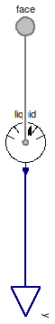

Table of Contents
- User's Guide
- BCs
- Sensors
- Assemblies
- Regions
- Subregions
- Connectors
- Characteristics
- Units
- Quantities
- BaseClasses
Download
- Latest: FCSys-2.0.zip (**Please check back soon or contact kdavies4 at gmail.com.)

Since the connectors in FCSys are hierarchical (see the Connectors package), the models for the sensors must be as well. A Face, FaceX, FaceY, or FaceZ connector is used in Species models, and there is a corresponding Species sensor model. The FaceBus connector is used in Phase models, and there are corresponding Phase sensor models. The FaceBus connector is nested once more in models such as the Subregion, and there is a corresponding Subregion sensor model.
Extends from Modelica.Icons.Package (Icon for standard packages).
| Name | Description |
|---|---|
| Subregion | Sensor for a face of a Region or Subregion model |
| Sensors for the FaceBus connector, e.g., of a Phase model (multi-species) |
 FCSys.Sensors.FaceBus.Subregion
FCSys.Sensors.FaceBus.Subregion
| Type | Name | Default | Description |
|---|---|---|---|
| Axis | axis | Axis.x | Axis normal to the face |
| Phases | |||
| Gas | gas | Gas | |
| Graphite | graphite | Graphite | |
| Ionomer | ionomer | Ionomer | |
| Liquid | liquid | Liquid | |
| Type | Name | Description |
|---|---|---|
| FaceBus | face | Connector for material, linear momentum, and heat of multiple species |
| RealOutputBus | y | Bus of measurements |
model Subregion "Sensor for a face of a Region or Subregion model" extends FCSys.BaseClasses.Icons.Sensor; parameter Axis axis=Axis.x "Axis normal to the face";FCSys.Sensors.FaceBus.Phases.Gas gas(final axis=axis) "Gas"; FCSys.Sensors.FaceBus.Phases.Graphite graphite(final axis=axis) "Graphite"; FCSys.Sensors.FaceBus.Phases.Ionomer ionomer(final axis=axis) "Ionomer"; FCSys.Sensors.FaceBus.Phases.Liquid liquid(final axis=axis) "Liquid"; FCSys.Connectors.FaceBus face "Connector for material, linear momentum, and heat of multiple species"; FCSys.Connectors.RealOutputBus y "Bus of measurements"; equationconnect(gas.face, face.gas); connect(graphite.face, face.graphite); connect(ionomer.face, face.ionomer); connect(y.gas, gas.y); connect(y.graphite, graphite.y); connect(y.ionomer, ionomer.y); end Subregion;